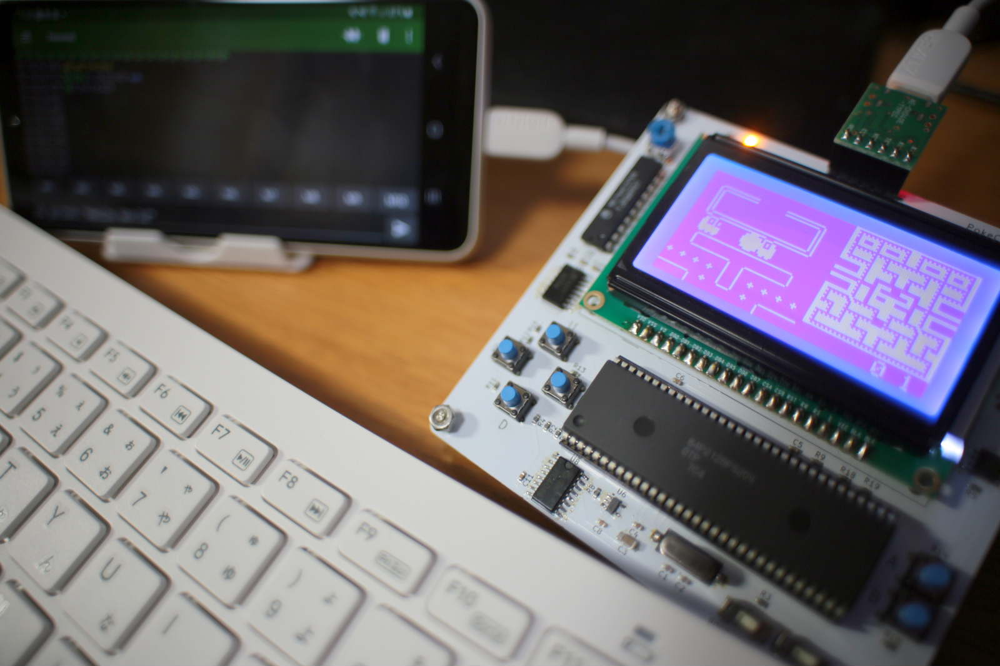
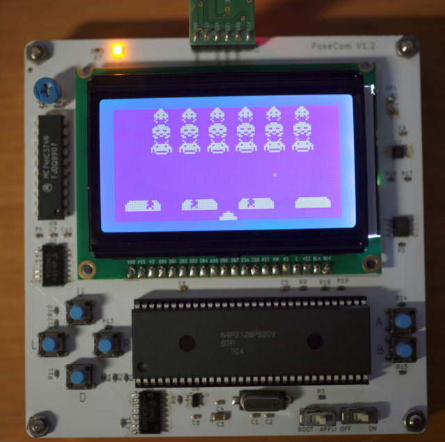
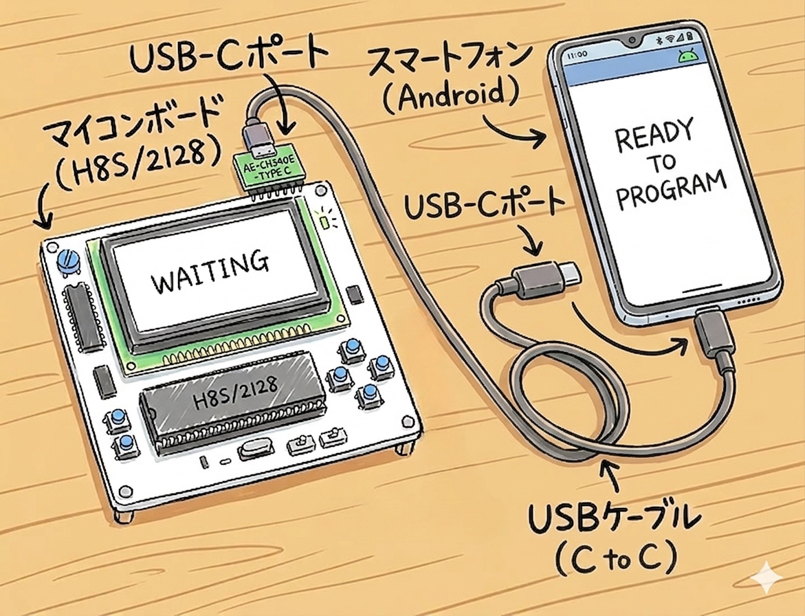
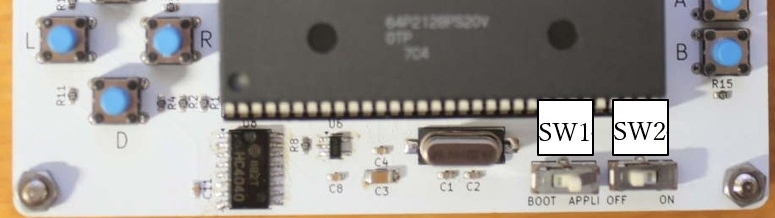
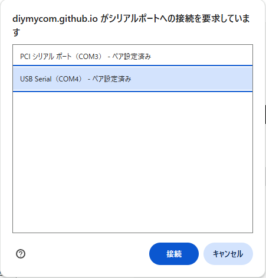
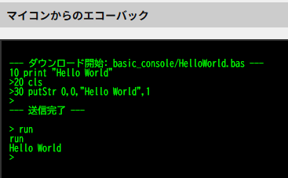

PocketComについて
コンセプト

スマホやPCにつなぐだけで、電源投入後すぐにBASICプログラミングを始められます。
PocketComでレトロゲーム作りやプログラミング学習を気軽に楽しんでみませんか？
こんな方におすすめです。
- 昔のBASICパソコンが好き
- 子供と一緒にプログラミングを楽しみたい
- かつての名作ゲームを、自分で作ってみたい
- Arduinoより気軽に遊びたい
- レトロゲーム機のような体験を楽しみたい
- 作ったゲームを10年後も無修正で動かし、懐かしさに浸りたい
できること
しれません。
しかし、PocketComなら、右の動画のようなリアルタイムゲームを
作ることができます。
動画で動作しているゲームは、すべてBASICだけで作成しています。
キャラクターの移動や画面描画、サウンド再生などを組み合わせ、
ゲームのプログラミングを楽しめます。
・ソースファイル
右の動画では、スマートフォンを使って簡単なBASICプログラムを入力・
実行している様子を紹介しています。
電源を入れるとすぐにPocket BASICが起動し、すぐにプログラムを
入力できます。 インタプリタ方式のため、電源投入からわずか数秒で
「Hello World」を表示できます。
パソコンを用意しなくても、スマートフォンとPocketComだけで
気軽にプログラミングを楽しめます。
PocketComは、右の動画のように別売りのオートローダを接続する
だけで単体でゲームを起動できます。
パソコンやスマートフォンを用意する必要はありません。
PocketComを持って行き、電源を入れるだけで、
その場ですぐに自作ゲームを遊んでもらえます。
まるで昔の携帯ゲーム機のように、自分だけのオリジナルゲームを
持ち歩けます。
様子を紹介しています。説明の都合上、一部の再生速度を変更しています。
特徴

- BASICインタプリタ内蔵
- スマホ・PCから利用可能
- 128×64ドットLCD搭載
- MMLによるBGM再生対応
- 約45KBのプログラム領域
- コンパクト (本体:100x100x20mm)
ご購入
メニューに移動
PocketCom(完成品)
組立
①左の形で梱包されているので、四隅のナットを外して、天板を裏返して取り付けて、右のように組み立ててください。


②下図のように、Androidスマホ または、
PCとマイコンを接続してください。
マイコン側は右の写真のようにAE-CH340Eボードを
マイコンにさして接続します。



PocketCom(主要部品キット)/PocketCom(基板・CPUキット)
部品配置
部品表の部品を集めて、基板に半田付けしてください。部品の場所は下記の通りです。


部品表
部品番号 名称 D1 チップLED サイズ1608 ⇒【115109】青緑色チップLED 1608 OSG30603C1E など C1,2 20pF50V サイズ1608 C3 10uF10V サイズ3216 C4～C7,C9～C11 0.1uF50V サイズ1608 C8 0.01uF50V サイズ1608 R1～R6,R8～R17 4.7kΩ サイズ1608 R7 330Ω サイズ1608 R18,R19 10Ω サイズ1608 U1 24LC128T-1/SN U2,U4 TC55257 U3 74HC04 U5 H8S/2128 （基板に付属） U6 R3112N251A U7 TC7WT241FU U8 74HC374N U9 74HC4040 BD1 LCD12864-D1 グラフィックドットマトリックス LCD モジュール VR1 【106063】半固定ボリューム 10kΩ [103] SP1 EFBRQ38C01 圧電スピーカー ⇒代替品 【101251】圧電スピーカー(圧電サウンダー) PT08 X1 20MHz水晶発振子 SW1～2 SSSS213000 アルプススライドスイッチ SW3～8 【P-03649】タクトスイッチ（水色） ～ 【114372】六角ナット M3×0.5 ～ 【107320】六角オネジ・メネジ MB3-15 ×８個 ～ 【115889】六角ナット M2×0.4 ～ 【115887】なべ小ねじ(+) M2×5 ～ 【100167】ピンヘッダー 1×40 (40P) ～ 【117017】USBケーブル USB2.0 Type-Aオス⇔Type-Cオス 0.5m ～ 【K-14745】CH340E USBシリアル変換モジュール Type-C（CN1に接続）
回路図

メニューに移動
動かしてみる
BASICコンソールを使う （PC/スマホ共通）
※スマホと接続して使用する場合、「BASICコンソール」が利用できないことがあります。その場合は、後述の「スマホでマイコンを利用する場合」を参照してください。
１）マイコンの電源を入れる。
SW2 を ON にしてから電源を入れてください。
（SW1 は常に「APPLI」側にしてください。）

２）BASICコンソールをマイコンに接続する。
① このサイトの「コンソール」を開き、「マイコンに接続」ボタンを押します。
② シリアルポート選択画面が表示されたら、一覧に表示された COM ポートの中から、マイコンの COM ポートを選択します。
③ 「マイコンに接続」ボタンの右側に、緑色で「接続済み」と表示されれば接続成功です。
④ エラーが表示された場合は、①からやり直してください。

３）サンプルプログラムを実行する。
① 「HelloWorld」ボタンを押して、プログラムをマイコンへ送信します。
② 「RUN」ボタンを押します。
③ マイコンからのエコーバックに左のような表示が出て、LCD に「Hello World」と表示されれば成功です。

SERIAL USB TERMINALを使う（スマホ）
スマホ側の設定
Serial USB Terminalをインストールして、マイコンのケーブルをスマホのUSBポートに接続してください。 Serial USB Terminalを起動して、Settingメニューの各タブで以下のように設定してください。


電源を入れる
右の動画のように、Serial USB Terminal の左上にある「USB Devices」メニューから
「CH34x」を選択してください。
マイコンの電源を入れて、「Pocket BASIC Vxxxx」のような起動メッセージが
表示されれば成功です。
BASICプログラムを動かす
①BASICプログラムを投稿サイトからダウンロードします。
②Serial USB Terminal の右上のメニューから「UploadFile」を選んで、「Protocol」に「Raw」を指定して、ダウンロードしたBASICプログラムを選択すると
ダウンロードが開始される。
③終わったらSerial USB Terminal でrunと入力して改行してください。
プログラムが実行されます。
※ このサイトの「BASICコンソール」を使う場合は、ファイルの文字コードはSJIS / EUC-JP / UTF-8 のどれでも使用できます。
ただし、Serial USB Terminalを使って書き込む場合は、ファイルを EUC-JP 形式で保存してください。
TeraTermを使う（PC）
「BASICコンソール」を使用すると、端末設定や文字コードの違いによるトラブルが起こりにくく、簡単に利用できますが、インターネットに接続せずに使用したい場合などは、TeraTermを使用してください。
PC側の設定
TeraTermをインストールして、マイコンのケーブルをPCのUSBポートに接続して増えたCOMポートを指定して接続してください。 その後、端末の設定とシリアルポート設定を下のように設定してください。


メニューに移動
電源を入れる
SW2をONにして、電源を投入する。（SW1は常にAPPLI側にしておいてください。） 左に示す起動メッセージが出れば、OKです。


BASICプログラムを動かす
①BASICプログラムを投稿サイトからダウンロードします。
②TeraTermの「ファイル＞ファイル送信」をメニューから選んで表示されるダイアログで、ダウンロードしたBASICプログラムを選択します。（左下の写真）
③右下の写真のようにBASICプログラムがマイコンに転送されます。
④終わったらTeraTermでrunと入力して改行してください。
プログラムが実行されます。
※ このサイトの「BASICコンソール」を使う場合は、ファイルの文字コードはSJIS / EUC-JP / UTF-8 のどれでも使用できます。
ただし、Teraterm を使って書き込む場合は、ファイルを SJIS 形式で保存してください。